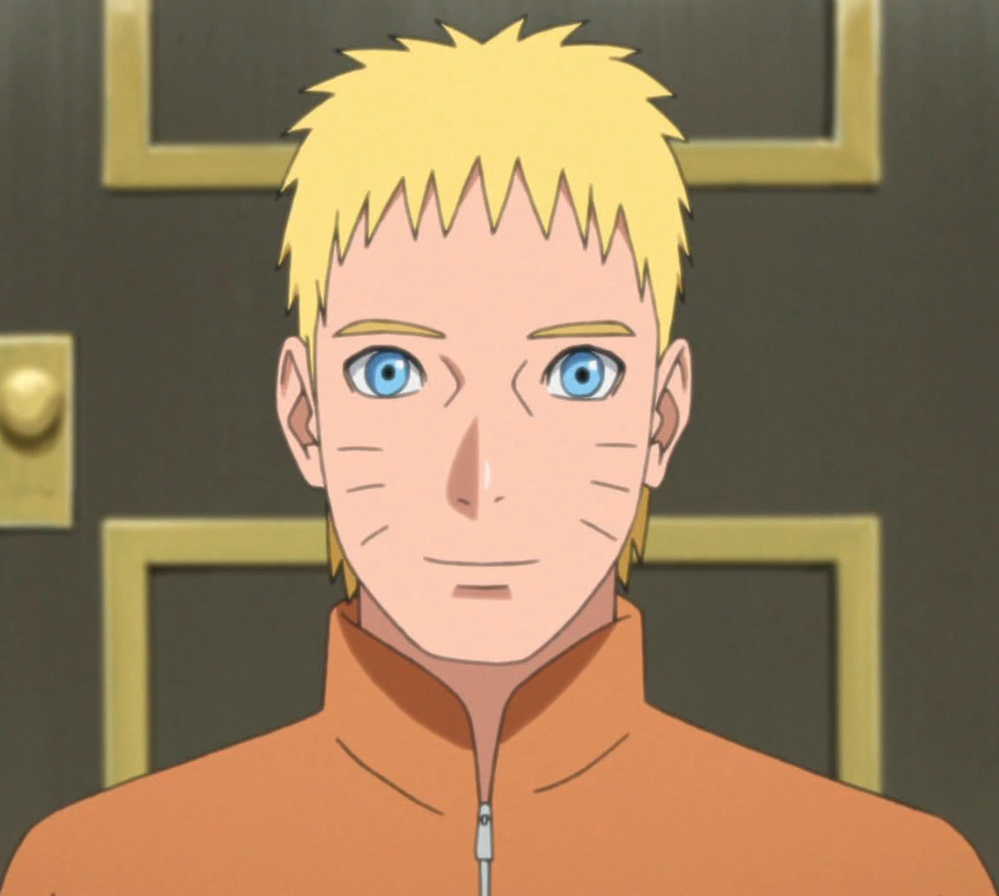

(Cascading Style Sheets) es un lenguaje de diseño utilizado para describir la presentación de un documento escrito en HTML o XML. CSS controla cómo se muestra el contenido en una página web.
La función principal de CSS es separar el contenido de la estructura de una página web de su presentación visual, facilitando el mantenimiento y la flexibilidad en el diseño.
Hay tres maneras de incluir CSS en un documento HTML: En línea: Usando el atributo style dentro de un elemento HTML. Interno: Colocando las reglas CSS dentro de una etiqueta style en el head del documento. Externo: Enlazando a un archivo CSS externo usando la etiqueta link.
Los selectores son patrones utilizados para seleccionar los elementos HTML a los que quieres aplicar estilos. Ejemplos incluyen selectores de tipo, clase, ID y descendiente.
Las propiedades en CSS especifican los aspectos del estilo que quieres aplicar (como color, font-size, margin), mientras que los valores definen la configuración para esas propiedades (red, 16px, 10px).
El modelo de caja describe cómo los elementos HTML están estructurados y cómo sus márgenes, bordes, padding (relleno) y contenido son calculados y cómo influyen en el diseño.
El "cascading" se refiere a la manera en que las reglas CSS son aplicadas y combinadas. Las reglas de estilo pueden provenir de varias fuentes (navegador, hojas de estilo del usuario, hojas de estilo externas), y CSS tiene un sistema de prioridad para resolver conflictos.
Las media queries son técnicas de CSS3 que permiten aplicar estilos según las características del dispositivo, como su anchura, altura, o resolución. Son esenciales para el diseño responsivo.
CSS puede usarse para crear un diseño responsivo mediante el uso de: Media queries: Adaptan el diseño según el tamaño de la pantalla. Unidades relativas: Como em, rem, % para tamaños flexibles. Flexbox y Grid Layout: Herramientas modernas de CSS que permiten diseñar layouts adaptables y flexibles.
Naruto Uzumaki es el personaje principal del manga y anime del mismo nombre, creado por Masashi Kishimoto. Naruto es un joven ninja de la aldea ficticia de Konoha. Con un espíritu indomable y una determinación inquebrantable, Naruto sueña con convertirse en el Hokage, el líder de su aldea.
Son Gokū es el protagonista de la serie de manga y anime Dragon Ball. Fue creado por Akira Toriyama en 1984
Monkey D. Luffy es un personaje de ficción y el protagonista principal del manga One Piece creado por Eiichirō Oda, así como el personaje central de la franquicia generada a partir de este. Es apodado por los demás como "Sombrero de Paja", debido a su característico sombrero de paja que lleva desde niño
Ichigo Kurosaki es un personaje ficticio de la serie de manga Bleach creada por Tite Kubo. Él es el protagonista principal de la serie, quien recibe poderes de segador de almas después de hacerse amigo de Rukia Kuchiki, la segadora de almas asignada a patrullar alrededor de la ciudad ficticia de Karakura.